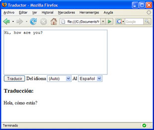

Crea un traductor en tu web con Google AJAX Language API
Vía Dirson (http://google.dirson.com. Noticias de google en español) me entero de que Google publicó recientemente el API (Interfaz de Aplicaciones de Programaciones) que permite realizar traducciones de textos. Esto es posible hacerlo mediante Ajax. Ajax es una técnica de desarrollo web para crear aplicaciones interactivas. Las herramientas Ajax permiten a los desarrolladores detectar y traducir textos en 13 idiomas (uno de ellos, el español).
Google nos tiene acostumbrados a implementar APIs que son muy sencillas de usar, y en este caso nos hacía mucha falta. Para demostrarlo, vamos a crear una página web con un sencillo traductor en Javascript, comentando paso por paso lo que hay que hacer para que podáis adaptarlo a vuestras necesidades o requisitos.
Paso 1: Incluir el API
La inclusión de las funciones necesarias para realizar la traducción es muy sencilla. Solamente hay que incluir el siguiente código, por ejemplo, en la sección HEAD de la página:
<script type="text/javascript"
src="http://www.google.com/jsapi">
</script>
<script type="text/javascript">
google.load("language", "1");
</script>
El primer bloque descarga a cliente la librería javascript Ajax API Loader, que es el cargador genérico de librerías Ajax utilizado por Google. Éste se usa en el segundo bloque script para cargar, llamando a la función google.load el API "language" (traductor), en su versión 1 (el segundo parámetro).
Paso 2: Creamos el interfaz
Nuestro traductor será realmente simple. Además, vamos a tener en cuenta un pequeño subconjunto de los idiomas permitidos para no complicar mucho el código, aunque podéis añadir todos los que consideréis necesarios.
El resultado será como el mostrado en la siguiente imagen. 
El código fuente completo lo encontraréis al final del post, por eso no voy a repetirlo aquí. Simplemente indicar que tendremos un TextArea donde el usuario introducirá el texto a traducir, dos desplegables con los idiomas origen y destino de la traducción, y un botón que iniciará la acción a través del evento onclick. Por último, se reservará una zona en la que insertaremos el resultado de la traducción.
Ah, un detalle interesante: en el desplegable de idiomas de origen se ha creado un elemento en el desplegable "Auto", cuyo valor es un string vacío; esto indicará al motor de traducción inferir el idioma a partir del texto enviado.
Paso 3: ¡Traducimos!
Al pulsar el botón hará una llamada a la función Onclick(), desde donde se realizará la traducción del texto introducido en el TextArea. Como podréis observar en el código, en primer lugar obtendremos los valores de los distintos parámetros, el texto a traducir y los idiomas origen y destino, y lo introducimos en variables para facilitar su tratamiento.
var text = document.getElementById("text").value;
var srcLang = document.getElementById("srcLang").value;
var dstLang = document.getElementById("dstLang").value;
Luego, realizamos la llamada al traductor. El primer parámetro será el texto a traducir, seguido de los idiomas (origen y destino), y por último se introduce la función callback que será invocada cuando finalice la operación; hay que tener en cuenta que la traducción es realizada a través de una llamada asíncrona a los servidores de Google:
google.language.translate(text, srcLang, dstLang, function(result)
{
if (!result.error)
{
var resultado = document.getElementById("result");
resultado.innerHTML = result.translation;
}
else alert(result.error.message);
}
);
Como podéis observar, y es quizás lo único extraño que tiene esta instrucción, el callback se ha definido como una función anónima definida en el espacio del mismo parámetro.
Para los que queráis jugar con esto directamente, ahí va el código listo para un copiar y pegar.
<html>
<head>
<title>Traductor</title>
<script type="text/javascript" src="http://www.google.com/jsapi"></script>
<script type="text/javascript">
goog